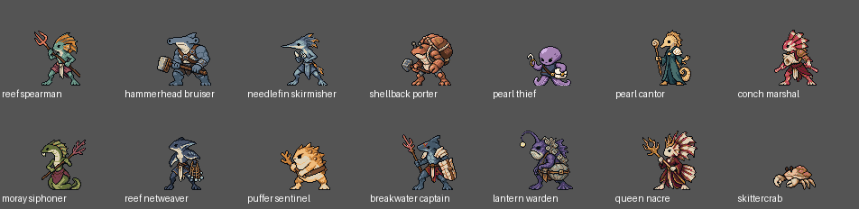

The Drowned Court
Actual PNG sprites and animated GIFs. Open this file locally; no server or internet is required.
The first four designs are user-approved with solid-color eyes. The remaining designs, motion and materials are director-selected for your review. Temporary original music awaits listening approval. Native comparison is a visual aid; individual PNGs and manifests establish dimensions, alpha, colors and timing.
Production usage: 182 / 300 subscription generations; 182 / 220 initial, reserve untouched. Phase 2 usage was separate.
Access instructions · Phase completion and validation · Kits and rules

Budget ledger · Native motion checks and selected frame indices · Still provenance